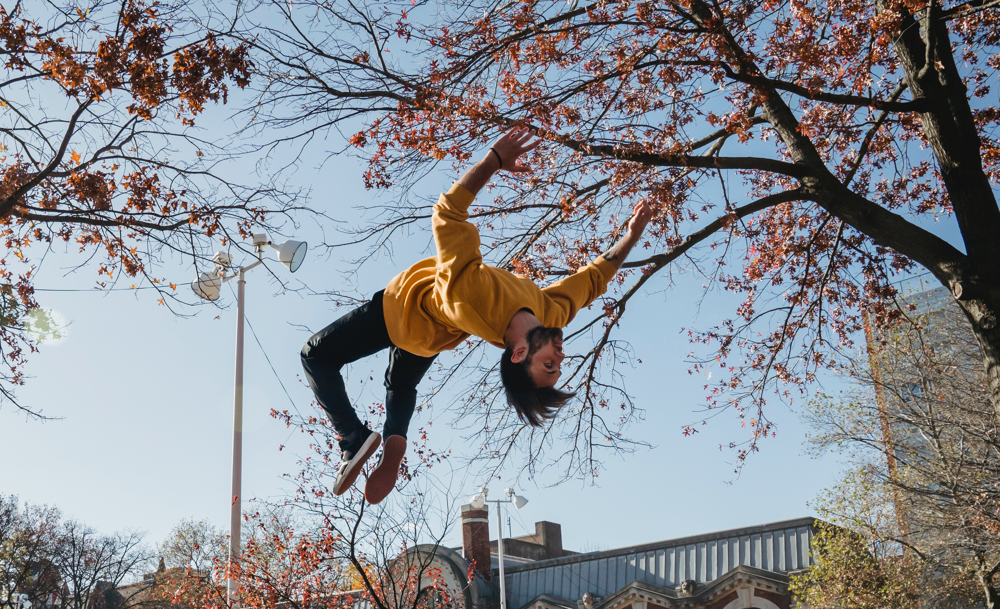
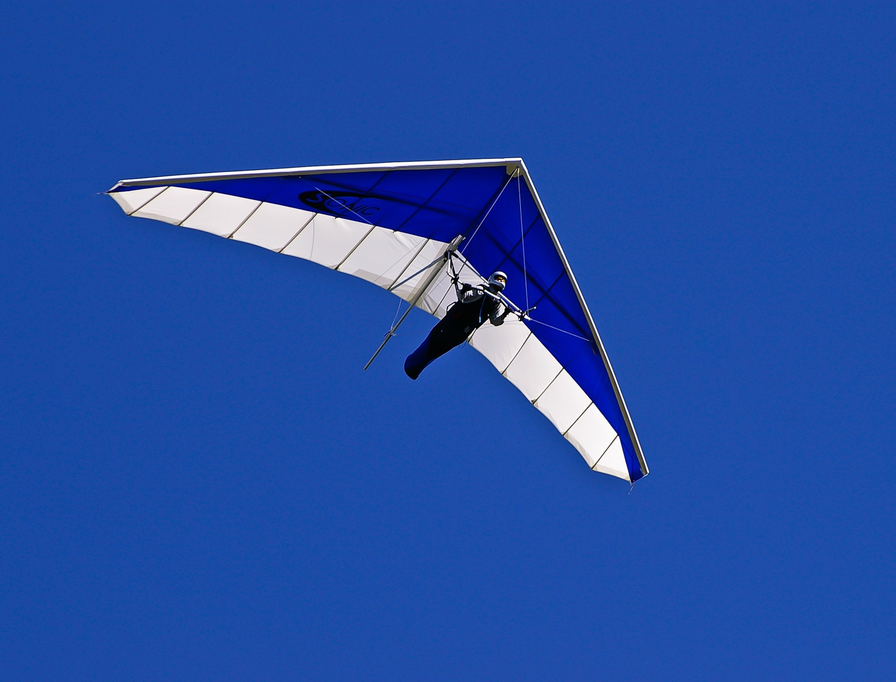

Extreme Sports
Mountain Climbing

Mountaineering, also called mountain climbing, the sport of attaining, or attempting to attain, high points in mountainous regions, mainly for the pleasure of the climb. Although the term is often loosely applied to walking up low mountains that offer only moderate difficulties, it is more properly restricted to climbing in localities where the terrain and weather conditions present such hazards that, for safety, a certain amount of previous experience will be found necessary. For the untrained, mountaineering is a dangerous pastime.
Mountaineering differs from other outdoor sports in that nature alone provides the field of action-and just about all of the challenges-for the participant. Climbing mountains embodies the thrills produced by testing one's courage, resourcefulness, cunning, strength, ability, and stamina to the utmost in a situation of inherent risk. Mountaineering, to a greater degree than other sports, is a group activity, with each member both supporting and supported by the group's achievement at every stage. For most climbers, the pleasures of mountaineering lie not only in the “conquest” of a peak but also in the physical and spiritual satisfactions brought about through intense personal effort, ever-increasing proficiency, and contact with natural grandeur.
Parkour

Parkour is the art of using one's body to maneuver around obstacles in a man-made or natural setting. Without the aid of equipment, moving from one place to another quickly and efficiently may involve running, vaulting, jumping, climbing, rolling, and other actions. The field was popularized through Internet videos, television commercials, documentaries, and feature films, such as the James Bond film Casino Royale, after it was first developed in France in the late 1980s (2006).
Parkour's roots may be traced back to Georges Hébert's "la méthode naturelle," or "natural method," of physical education and training, which he developed starting in the years leading up to World War I. The exercise program included "parcours du combattant," or obstacle courses, as well as instruction in sprinting, jumping, climbing, balancing, swimming, and defending. The French military training eventually was based on Hébert's approach. Raymond Belle later received training in Hébert's techniques while serving in the military, and he later used that education to become an expert fireman. This training took place in the 1940s and 1950s. He was renowned for his athletic acrobatic abilities, which included the ability to safely and quickly traverse along ledges, to scale buildings without the aid of a ladder, and to leap between building rooftops. David Belle, his son, is typically given credit.
Sky Diving

Skydiving, also called parachuting, use of a parachute—for either recreational or competitive purposes-to slow a diver's descent to the ground after jumping from an airplane or other high place. The sport traces its beginnings to the descents made from a hot-air balloon by the French aeronaut André-Jacques Garnerin in 1797, but modern skydiving is usually performed from a propeller-driven airplane.
At events such as the annual World Free Fall Convention in Quincy, Illinois, however, parachutists are afforded the opportunity to jump from such diverse craft as hot-air balloons, helicopters, and a Boeing 727.
Furthermore, typical jump altitudes in modern times for experienced skydivers range from 7,500 to 15,000 feet (2,300 to 4,600 metres) above ground level, yielding a freefall time of between 40 and 85 seconds. The length of the freefall (the time between exiting the aircraft and deploying the parachute) is dependent upon such factors as exit altitude, opening altitude, and fall rate. The fall rate is determined by the jumpsuit the skydiver wears and the way in which the suit conforms to the body during the freefall (a looser suit offers more resistance to the air and slows the fall) and by the diver's body configuration relative to the ground.
Hang Gliding

Hang gliding, sport of flying in lightweight unpowered aircraft which can be carried by the pilot. Takeoff is usually achieved by launching into the air from a cliff or hill. Hang gliders were developed by the pioneers of practical flight. In these early designs the pilot hung from the armpits on parallel bars beneath the wings, swinging hips and legs to control roll and shifting back and forth to influence pitch.
Modern hang gliding emerged toward the end of the 1960s. In the early 1960s enthusiasts in California were gliding down coastal dunes on homebuilt delta-shaped wings they had adapted from kite designs developed by Francis Rogallo and his wife, Gertrude. The Rogallos' kites had attracted attention because of NASA's interest in using them for spacecraft retrieval. On the dunes cheap materials such as bamboo and plastic sheeting were used, and the parallel-bar control method remained.